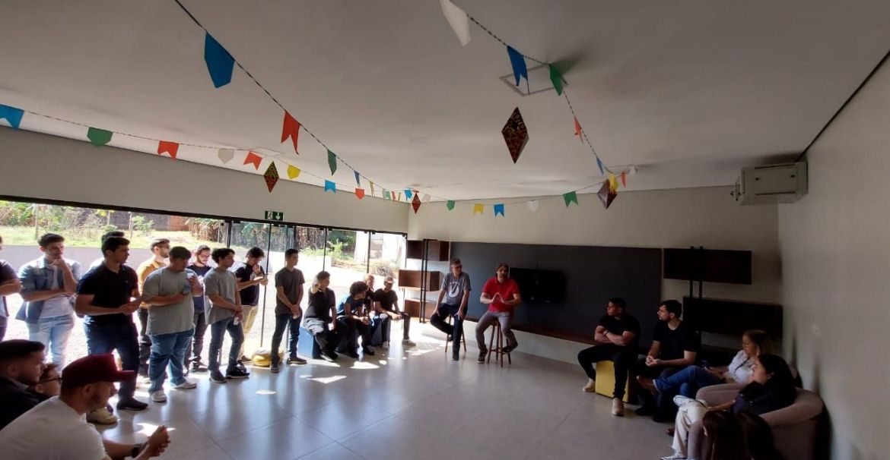
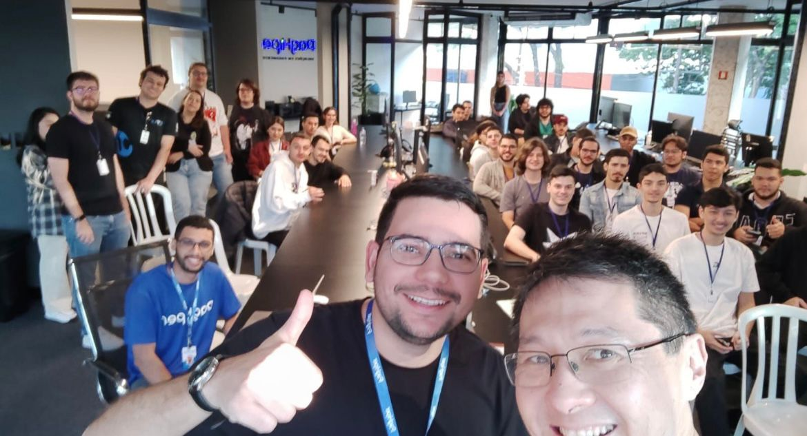
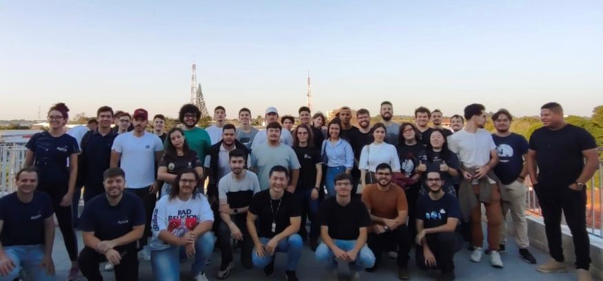

Visitas Técnicas às Empresas de Tecnologia

Apresentação e Networking
Conclusão: Foi um momento de integração e troca de experiências com profissionais das empresas locais de tecnologia, proporcionando insights valiosos sobre o mercado de trabalho.

Visita às Instalações
Conclusão: Os estudantes puderam conhecer diferentes setores e compreender como as empresas organizam seus ambientes de trabalho para maximizar a produtividade e bem-estar dos colaboradores.

Encerramento e Confraternização
Conclusão: Este momento foi fundamental para consolidar o conhecimento adquirido e estabelecer conexões profissionais valiosas para o futuro dos estudantes.